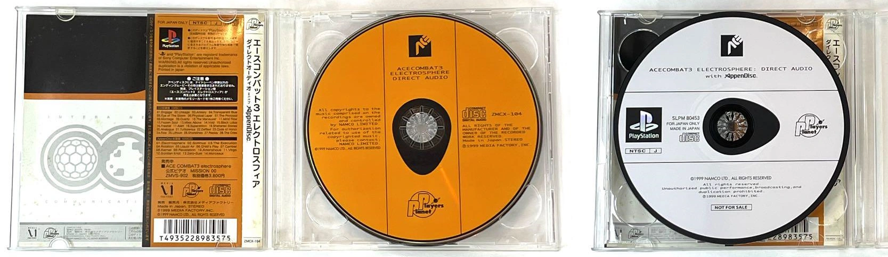
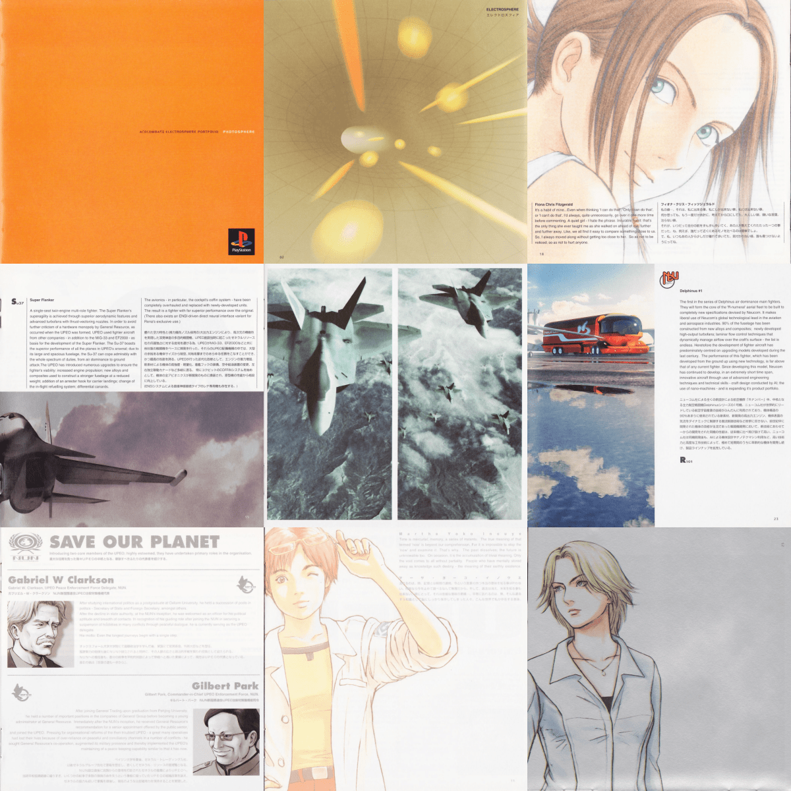

皇牌空战3ACE COMBAT 电脑空间ELECTROSPHERE 中文版
这是一个《皇牌空战3：电脑空间》的非官方翻译项目。本项目以日文版为基础，对游戏中的对话、界面等需要译的内容进行了全面的中文化处理，让玩家能够完全使用中文进行游戏，获得流畅的游戏体验。
本页面提供游戏光盘镜像的中文补丁下载。后续如有任何更新或改进，也会在此页面及时发布。除了游戏本体的翻译，本项目还包含了AC3相关的周边影像资料等内容的翻译。如果你对这款游戏独特的剧情和世界观感兴趣，这些额外的资料将帮助你更深入地了解2040年代的Strangereal世界。
另外，本项目提供一份完整的AC3全路线攻略路线图，方便参考。
翻译内容说明
| 内容部分 | 说明 |
|---|---|
| 对话文本 | 游戏中所有对话文本都已翻译为中文。包括角色视频邮件，新闻播报，广告，文字播送，任务简报等，使用字体为接近游戏原版字体的圆体字：寒蝉全圆黑。 |
| “搜索引擎”词条 | 含标题在内，全部翻译，字体为寒蝉全圆黑。 |
| 战场无线电对话 | 全部翻译为中文，使用的字体为缝合像素Fusion pixel，以确保文字快速显示时的阅读体验。 |
| 即时动画字幕 | 全部翻译，这部分文本来源和无线电一致，因此字体也是一样的缝合像素Fusion pixel。 |
| CG字幕 | CG动画，全部翻译，使用的字体为缝合像素Fusion pixel。 |
| 菜单 | 保留原有界面设计风格前提下，仅翻译了部分文本，装饰性英文大多保留不翻译。任务代号遵循系列传统，不做翻译。 |
预览图
补丁下载及使用
使用方法
1. 准备镜像文件
把CD1和CD2两个光盘镜像文件（BIN格式）复制到补丁文件夹，支持以下版本：
| 版本 | 容量（字节） | CRC32 | MD5 |
|---|---|---|---|
| 日版CD1 | 716,240,448 | B6FAA72C | 86fd694677098d26909086895404f571 |
| 日版CD2 | 723,766,848 | C740C3FF | c3909981452f1506290121b2763beb24 |
| 日亚版CD1 | 716,287,488 | CCDDA3B5 | 30f7dce98b6901290cb26c9baf27268f |
| 日亚版CD2 | 723,813,888 | B86E0F52 | 50760963ae8a26ea0188b165f05b33a1 |
注意：此两版本的ID都是SLPS-02020(CD1)和SLPS-02021(CD2)。
2. 运行补丁程序
双击 ac3_patcher.exe，程序会自动识别是否为支持的镜像。如果验证通过，将开始打补丁并生成新的bin文件。
3. 存档兼容说明
汉化版本支持读取原来日版、日亚版存档。但请注意：日版和日亚版不能互相换碟，请勿混用两个版本的镜像。
4. 关于CUE文件
某些场合可能需要cue文件配合镜像一起使用，使用原始的cue即可（确保和镜像bin文件名一致）。
周边资料翻译
官方周边视频带字幕
-
1999年发售录像带（VHS）ACE COMBAT 3 ELECTROSPHERE MISSION 00
-
1999年发售原声CD附带的CD-ROM：ACE COMBAT 3 ELECTROSPHERE : DIRECT AUDIO with AppenDisc，其中的一段关于X-49夜鸦的介绍视频

-
游戏本地附带两本小册子，一本是说明书，一本是名为AC3 PHOTOSPHERE的周边图册，包含CG图和一些插画，并附有文字介绍世界观和角色。
